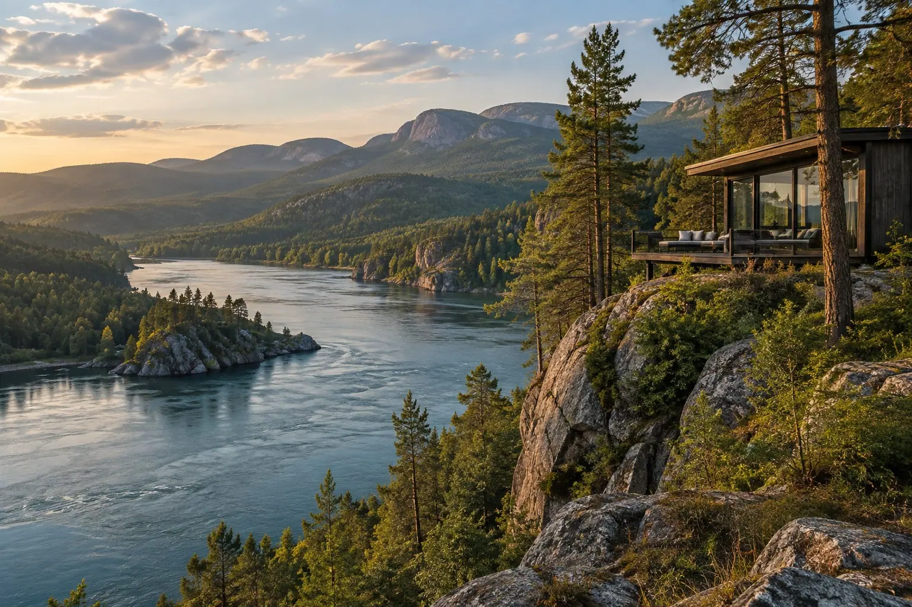

Об отеле

A’MORE Collection под Красноярском — загородный отель для отдыха с семьёй и друзьями. Здесь можно остановиться в номере с видом на природу и совместить поездку за город с занятиями для взрослых и детей.
Отель подходит для поездок на выходные, семейного отпуска и встреч с близкими. На территории есть ресторан и баня, беседки и мангалы для пикников, а также костровая зона на берегу. Для дней рождения, семейных праздников и встреч компанией предусмотрены павильоны.
В тёплое время года можно гулять по пешим тропам, кататься на велосипедах, играть в настольный теннис и в мяч. В аренду доступны взрослые и детские велосипеды и спортивный инвентарь. Летом к этим занятиям добавляются SUP-прогулки и отдых в местах для загара.
Для детей есть игровые зоны, контактный зоопарк и развивающие игры на внимание, память и логику. Совместные прогулки можно дополнить катанием на велосипедах и знакомством с растениями в садовых парниках.
Рыбалка доступна в любое время года. Зимой можно кататься на коньках, снегоходах и ватрушках, а любители активного отдыха могут выбрать поездку на багги. Доступность занятий на открытом воздухе зависит от сезона и погоды. Варианты для прогулок и поездок за пределами отеля можно посмотреть на карте интересных мест.